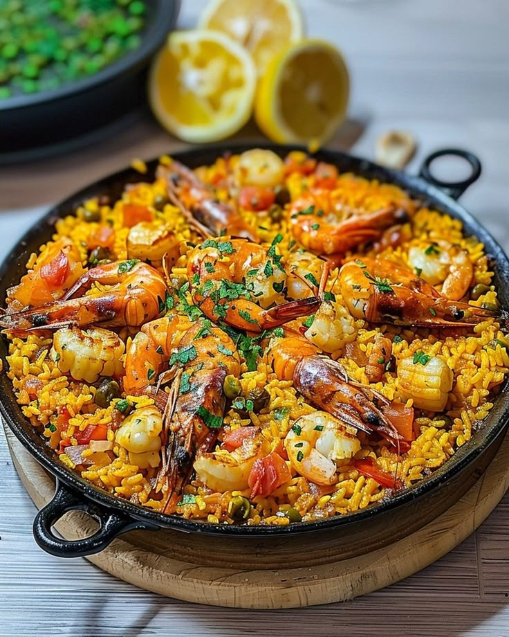
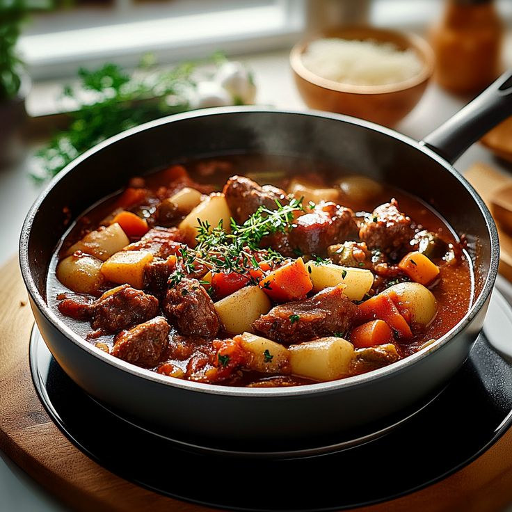
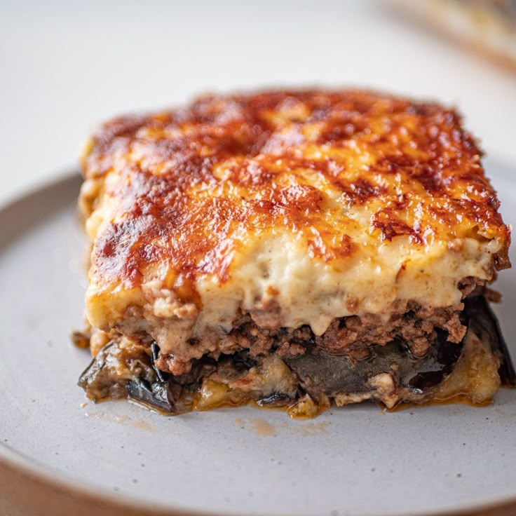

Navigation

Spaghetti Carbonara (Italie)
-
Ingrédients :
- 400g de spaghetti
- 150g de pancetta
- 3 œufs
- 50g de parmesan râpé
- Sel, poivre
-
Instructions :
- Faites cuire les pâtes.
- Faites revenir la pancetta à la poêle.
- Battez les œufs avec le parmesan, sel et poivre.
- Mélangez les pâtes chaudes avec la pancetta et la sauce aux œufs hors du feu.

Paëlla (Espagne)
-
Ingrédients :
- 300g de riz
- 200g de poulet
- 150g de crevettes
- 1 poivron
- 100g de petits pois
- Safran, huile d’olive
-
Instructions :
- Faites revenir le poulet et le poivron dans l’huile.
- Ajoutez le riz, le safran et l’eau.
- Ajoutez les crevettes et les petits pois en fin de cuisson.
- Laissez mijoter jusqu’à absorption du liquide.

Bœuf Bourguignon (France)
-
Ingrédients :
- 800g de bœuf
- 2 carottes
- 1 oignon
- 200g de champignons
- 50cl de vin rouge
- Thym, laurier, sel, poivre
-
Instructions :
- Faites revenir la viande et les légumes.
- Ajoutez le vin, les herbes et laissez mijoter 2h.
- Ajoutez les champignons en fin de cuisson.

Goulash (Hongrie)
-
Ingrédients :
- 500g de bœuf
- 2 oignons
- 2 pommes de terre
- 2 carottes
- Paprika, sel, poivre
-
Instructions :
- Faites revenir la viande et les oignons.
- Ajoutez les légumes, le paprika et couvrez d’eau.
- Laissez mijoter 1h30.

Moussaka (Grèce)
-
Ingrédients :
- 2 aubergines
- 300g de viande hachée
- 2 tomates
- 1 oignon
- Béchamel, huile d’olive
-
Instructions :
- Faites revenir l’oignon et la viande.
- Ajoutez les tomates coupées.
- Alternez couches d’aubergines grillées et viande dans un plat.
- Couvrez de béchamel et enfournez 30 min à 180°C.

Fish and Chips (Royaume-Uni)
-
Ingrédients :
- 2 filets de cabillaud
- 4 pommes de terre
- Farine, bière, sel, poivre
- Huile pour friture
-
Instructions :
- Préparez une pâte à frire avec farine, bière, sel et poivre.
- Enrobez le poisson et faites-le frire.
- Faites frire les pommes de terre coupées en frites.